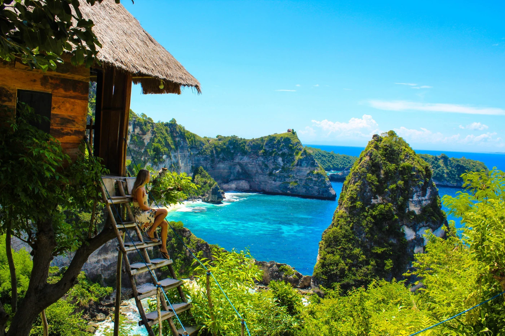
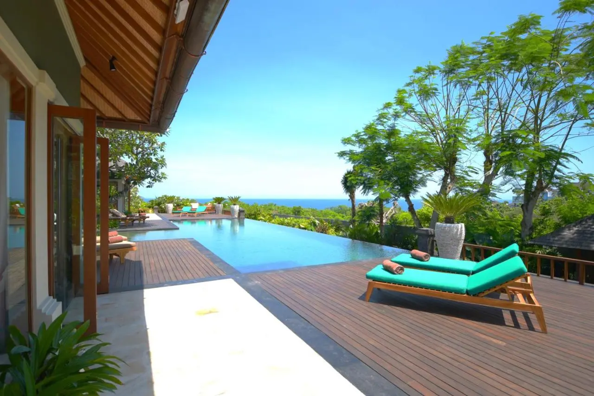
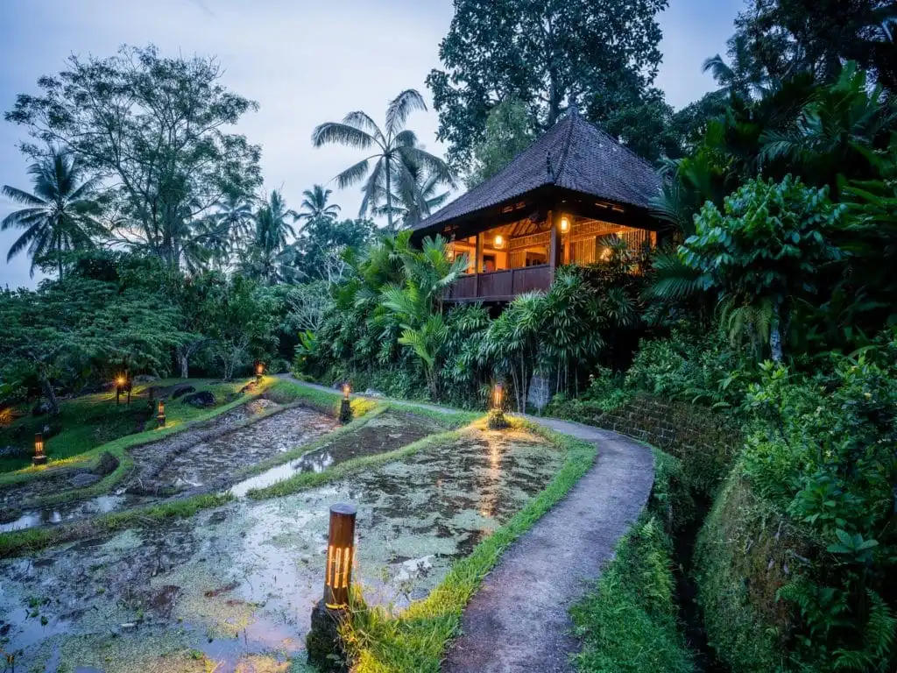
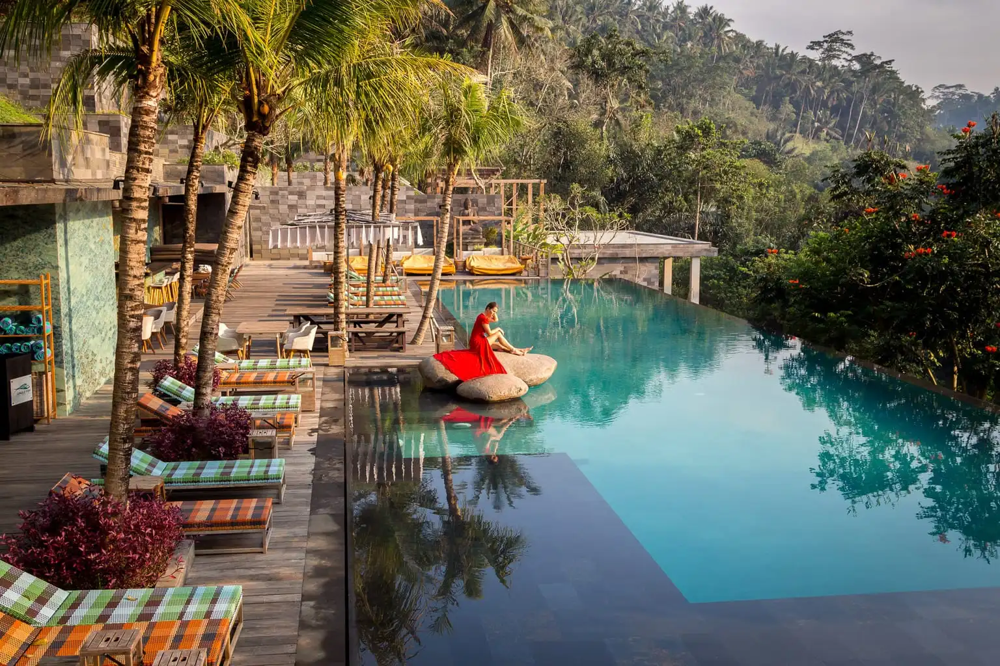

Top 3 Vegan Accomodations in Bali, Indonesia
 Friday, 09.09.2022When it comes to vegan travel, Bali definitely delivers. The Island of the Gods has everything from beachfront bungalows to hipster hostels, all serving up a delicious plant-based fare. So whether you're looking to indulge in some serious R&R or just want to experience the best of Balinese culture, there's a vegan stay for you.
The Shanti Residence
This luxury villa is perfect for vegans who want to experience the best of what Bali has to offer. Set amidst tropical gardens and located just minutes from Seminyak Beach, The Shanti Residence is a haven of peace and tranquillity. And the best part? All of the food is 100% vegan. From breakfast bowls brimming with fresh fruits to hearty mains like jackfruit curry, you'll be spoilt for choice.
Bali Eco Stay
For those who want to get back to nature, Bali Eco Stay is the perfect place to stay. This working farm offers guests the chance to get their hands dirty and learn about organic farming methods. And when you're not busy tending to the rice paddies or collecting eggs from the free-range chickens, you can tuck into some seriously good vegan food. Think tempeh tacos and nasi goreng made with homemade seitan. Delish!
Chapung Sebali
Located in Ubud, Chapung Sebali is a haven for health-conscious travellers. As well as offering yoga and meditation classes, this luxury retreat also serves up some of the best vegan food in Bali. Highlights include raw lasagna made with zucchini noodles and an epic avocado chocolate mousse that will have you drooling for days afterwards.
Conclusion:
Bali is fast becoming one of the most popular destinations for vegans and non-vegans
alike.
So if you're
planning a trip to this idyllic island, be sure to check out one of these amazing vegan stays. From
luxury villas to working farms, there's something for everyone. And with so much delicious plant-based
food on offer, you'll be spoilt for choice!